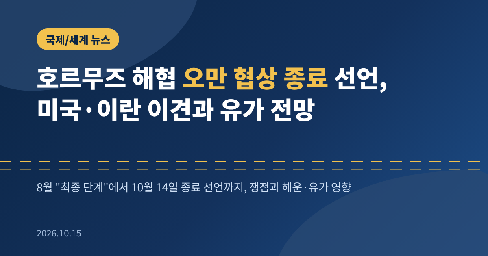
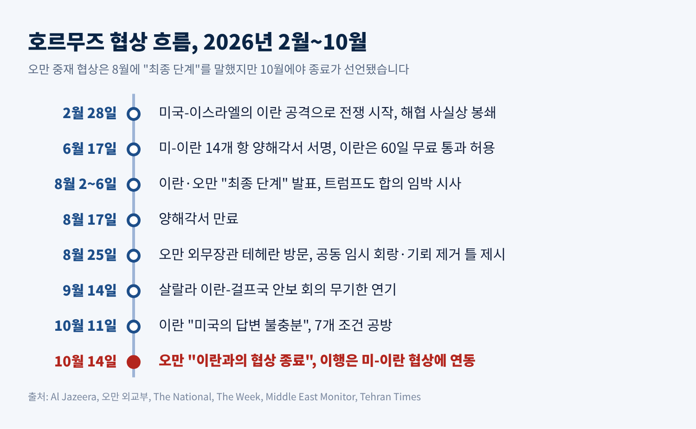
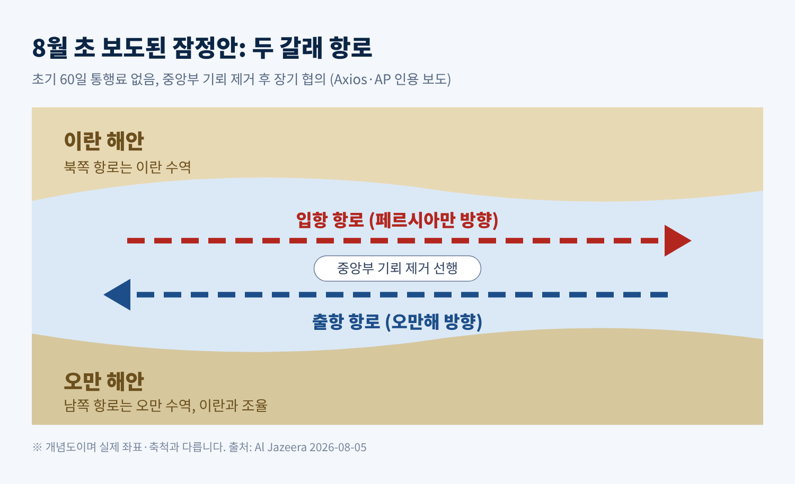
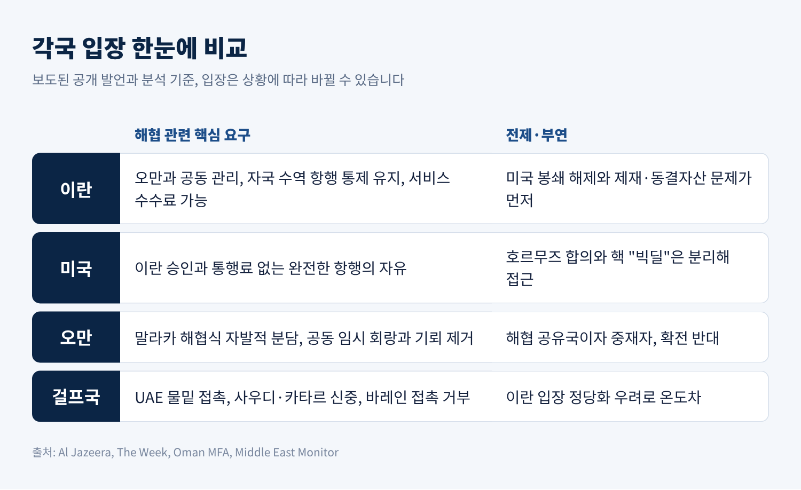
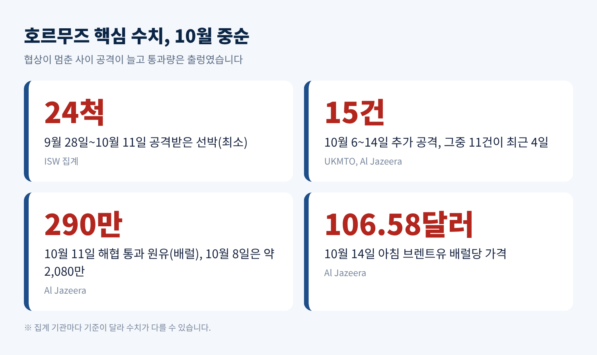
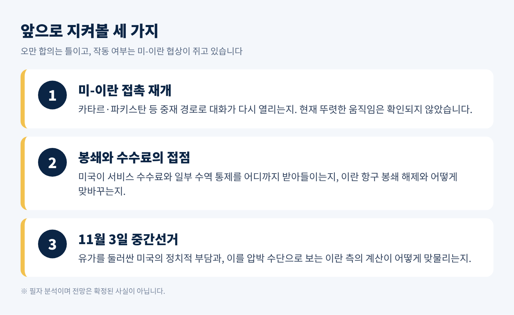

3줄 요약
오늘은 오만이 중재해 온 호르무즈 해협 재개방 협상이 지금 어디에 와 있는지 정리해 보려 합니다.
협상 내용과 각국의 이해관계, 해운과 유가에 미치는 영향을 차례로 살펴보겠습니다.
미국·이란·오만·걸프국의 입장은 보도된 범위에서 균형 있게 적었습니다.
테헤란타임스에 따르면 오만 외교부는 10월 14일 이란과의 호르무즈 협상이 끝났다고 발표했습니다.
양측이 "이해(understandings)"에 도달했지만, 구체적인 내용은 공개되지 않았습니다.
오만 외교부는 이행과 해상 운송의 완전한 복구가 이란과 미국 사이의 더 넓은 협상에 달려 있다고 밝혔습니다.
성명에는 이런 문장이 담겼습니다. "우리는 확전에 반대하며 지속적인 외교의 길을 강조한다."
한 가지 바로잡을 점이 있습니다.
협상이 '최종 단계'에 있다는 이란과 오만의 발표는 8월 2일 전후에 나왔습니다.
10월 중순에 미국과 이란이 오만에서 회담을 재개했다는 신뢰할 만한 보도는 확인되지 않았습니다.
미국 연구기관 ISW의 10월 14일 분석도 미-이란 협상에 "특이사항이 없다"고 기록했습니다.

호르무즈 해협은 평시 세계 원유·LNG 공급의 약 5분의 1이 통과하는 좁은 수로입니다.
전쟁 전에는 하루 125~130척의 대형 상선이 오갔습니다. 소스에 따라 집계 기준이 조금 다릅니다.
지금은 사정이 다릅니다.
알자지라에 따르면 이란 제외 걸프 원유 흐름은 9월에 개전 전의 81% 이상까지 회복했습니다.
그러나 10월 11일 통과량은 290만 배럴로 급감했습니다. 10월 8일에는 약 2,080만 배럴이었습니다.
가격도 흔들렸습니다.
브렌트유는 10월 14일 아침 배럴당 106.58달러를 기록했고, WTI는 전날 94.14달러에 마감했습니다.
9월 14일에는 한때 110달러를 찍기도 했습니다.
미국에서는 11월 3일 중간선거를 앞두고 에너지 가격이 정치적 부담이 됩니다.
이란 관리가 로이터에 "유가를 높게 유지해 트럼프 대통령을 압박하려는 목적이 있다"고 말했다는 보도도 있습니다.
2026년 6월 17일 미국과 이란은 14개 항의 양해각서에 서명했습니다.
5조는 이란이 60일간 상선을 무료로 통과시키도록 했습니다.
문구가 모호했습니다. 이란은 해협 전체의 관리권을 인정받은 것으로 읽었고, 미국은 항행의 자유를 보장하라는 뜻으로 읽었습니다.
7월 충돌이 재개되며 양해각서는 흔들렸고, 8월 17일 만료됐습니다.
그 공백을 메운 것이 오만입니다.
8월 초 보도된 잠정안의 골자는 이렇습니다.
입항 선박은 이란 수역 북쪽 항로로, 출항 선박은 오만 수역 남쪽 항로로 다닙니다.
초기 60일은 통행료가 없고, 기뢰를 먼저 치웁니다.

8월 25일 알부사이디 오만 외무장관이 테헤란을 찾아 아라그치 이란 외무장관과 만났습니다.
오만 외교부 성명은 공동 임시 항행 회랑과 공동 기뢰 제거 사업을 담은 단계적 틀을 밝혔습니다.
영구 회랑과 향후 관리 방식은 기술 협상으로 넘겼습니다.
최종 합의가 아니라 제안이라는 점도 분명히 적었습니다.
9월 14일에는 오만 살랄라에서 열릴 예정이던 이란-걸프국 안보 회의가 무기한 연기됐습니다.
사우디 동서 송유관 타격과 이란 화물선 피격이 겹쳤습니다.
알부사이디 장관은 "합의의 이익을 위해" 미뤘다고 설명했습니다.
이해관계를 나란히 놓으면 간극이 보입니다.

이란은 오만과 해협을 공동 관리하되 자국 수역의 항행 통제를 유지하려 합니다.
서비스 수수료를 받겠다는 입장이며, 로이터에 따르면 양방향 전면 통제 요구는 접었습니다.
다만 미국의 이란 항구 봉쇄가 풀리기 전에는 해협을 열지 않겠다고 해 왔습니다.
10월 11일 레자이 최고국가안보회의 서기는 미국의 답변이 "불충분"하다고 평가했습니다.
이란이 미국에 보낸 7개 조건 가운데 일부는 수용됐지만 일부는 불명확하다는 것입니다.
미국은 이란의 승인도, 통행료도 없는 완전한 항행의 자유를 요구합니다.
트럼프 대통령은 8월에 "그들이 요금을 받게 두지 않겠다"고 말했습니다.
국제법상 국제 해협의 통행료는 금지되지만, 도선 같은 서비스 요금은 허용된다는 점이 논쟁의 틈입니다.
제재 때문에 기업이 미국의 면제 없이 이란 당국과 조율하기 어렵다는 분석도 있습니다. 결국 결정권이 워싱턴으로 돌아간다는 뜻입니다.
오만은 말라카 해협 모델을 내놓았습니다.
선박이 자발적으로 항행 안전과 환경 보호 비용을 나누는 방식입니다.
이란은 자발성을 거부하고 의무 분담금을 원했다고 더위크는 전합니다.
걸프국 안에서도 온도 차가 큽니다.
UAE는 이란과 물밑 접촉을 이어 왔습니다. 바레인은 이란 관리를 만나지 않겠다는 입장입니다.
사우디와 카타르는 참석할 뜻은 있으나 이란의 입장을 정당화하는 모양새를 경계합니다.
오만이 맡은 역할의 한계가 여기서 드러납니다.
예전엔 협상 타결이 시장의 최대 변수였습니다. 지금은 선박 공격이 그 자리를 차지했습니다.
알자지라가 인용한 집계로는 9월 28일부터 10월 4일까지 유조선 10척이 피격됐고, 10월 6일부터 14일까지 15건의 공격이 추가됐습니다.
그중 11건이 최근 나흘에 몰렸습니다.
ISW는 9월 28일부터 10월 11일까지 최소 24척이 공격받았다고 집계합니다.
이란은 신규 해군 부대를 해협 동쪽과 오만해에 배치했고, 선박에 응답기를 끄지 말고 이란군과 조율하라고 경고했습니다.
미국 중부사령부는 이란의 통제 주장을 부인합니다. 미군과 지역 파트너가 통제한다는 것입니다.
미국이 지원한 수송으로 10월 12일 하루 1,900만 배럴 이상이 지났다고도 밝혔습니다.
이란은 이 '셔틀' 방식을 명시적 표적으로 삼고 있다고 주장합니다.
양측의 주장이 엇갈리므로, 어느 쪽의 수치도 독립 검증된 것은 아닙니다.

선박 보험료와 승무원 위험수당도 올랐습니다.
물량이 회복돼도 가격이 내려가지 않았던 이유입니다.
일각에서는 일부 걸프국이 안전 통행을 위해 이란에 대가를 냈을 가능성을 제기하지만, 확인된 사실은 아닙니다.
정리하면 이렇습니다.
오만-이란 합의는 해협의 기술적 틀입니다. 그 틀을 실제로 작동시킬 열쇠는 봉쇄와 제재, 핵 문제를 쥔 미-이란 협상에 있습니다.
루비오 국무장관도 8월에 호르무즈 합의와 핵 '빅딜'을 분리해서 말했습니다.
다만 해협 문제가 봉쇄와 제재 해제를 건드리는 순간, 두 사안은 사실상 한 테이블에서 다뤄질 수밖에 없습니다.
앞으로 지켜볼 대목은 세 가지입니다.

첫째, 미-이란 접촉이 카타르·파키스탄 같은 중재 경로로 재개되는지입니다.
ISW 보도와 전문가 진단으로는 아직 그런 움직임이 뚜렷하지 않습니다.
둘째, 미국이 이란의 서비스 수수료와 일부 수역 통제를 어디까지 받아들이는지입니다.
셋째, 11월 3일 중간선거입니다. 양쪽 모두 이 날짜를 계산에 넣고 있다는 정황이 있습니다.
한계도 분명합니다.
오만이 밝힌 '이해'의 내용이 공개되지 않아, 지금은 그 무게를 가늠하기 어렵습니다.
후티의 리야드 공항 공습 같은 주변 전선이 변수가 될 수 있다는 점도 짚어 둡니다.
끝으로 한 마디만 더 드리겠습니다.
오만의 종료 선언은 문이 닫혔다는 신호가 아니라, 공이 워싱턴과 테헤란으로 넘어갔다는 신호로 읽힙니다.
해협이 다시 열리는 날을 묻는다면, 지금으로서는 두 나라가 같은 문서에 서명하는 날이라고 답할 수밖에 없습니다.
출처: Al Jazeera(2026-08-05, 08-06, 08-13, 10-14), 오만 외교부(2026-08-25), The National(2026-08-24), The Week(2026-09-14), Middle East Monitor(2026-10-11), Tehran Times(2026-10-14), Critical Threats/ISW(2026-10-14), Straits.live(2026-10-14)